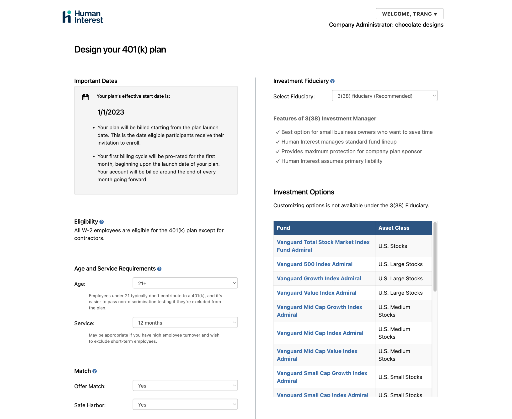
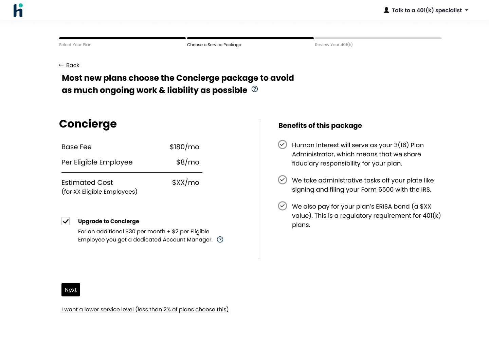
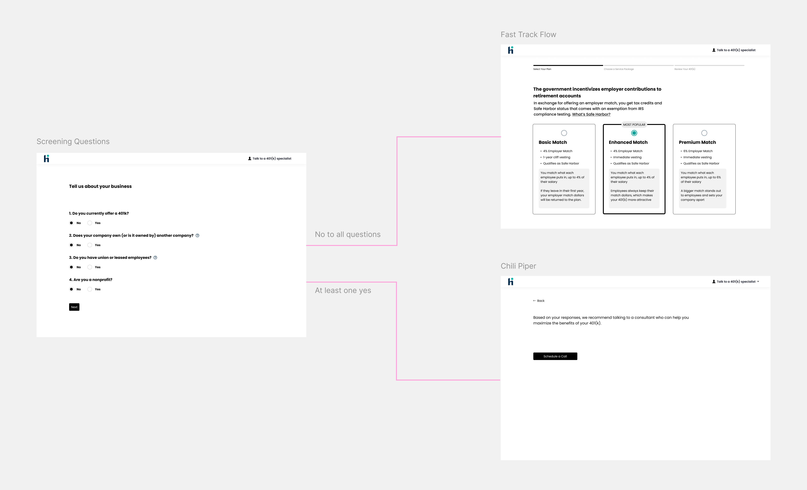
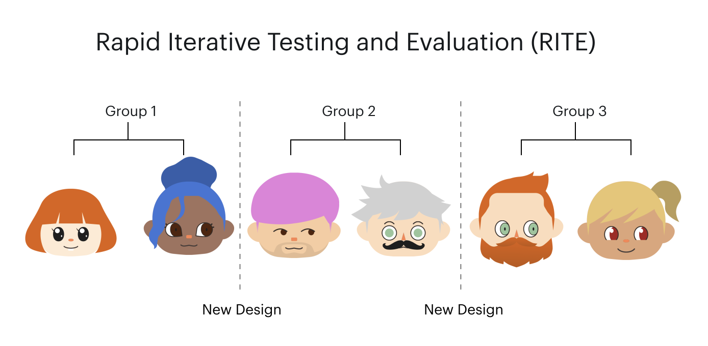
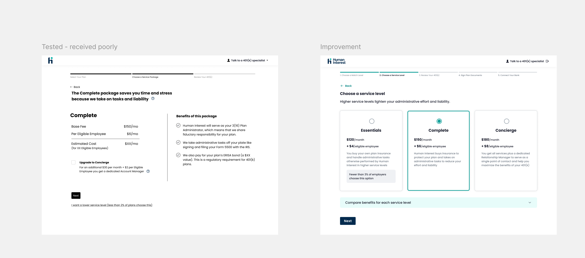
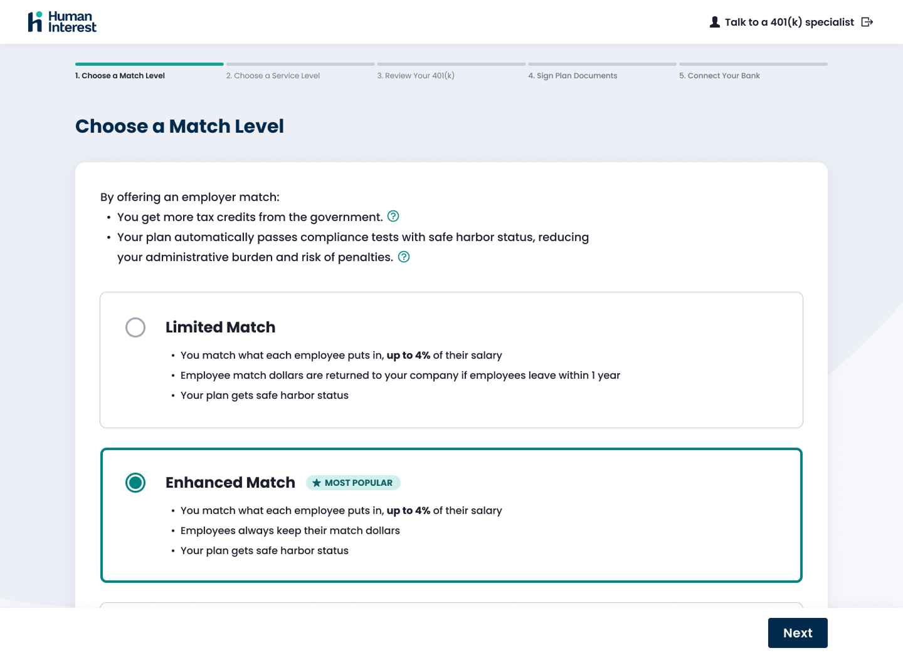
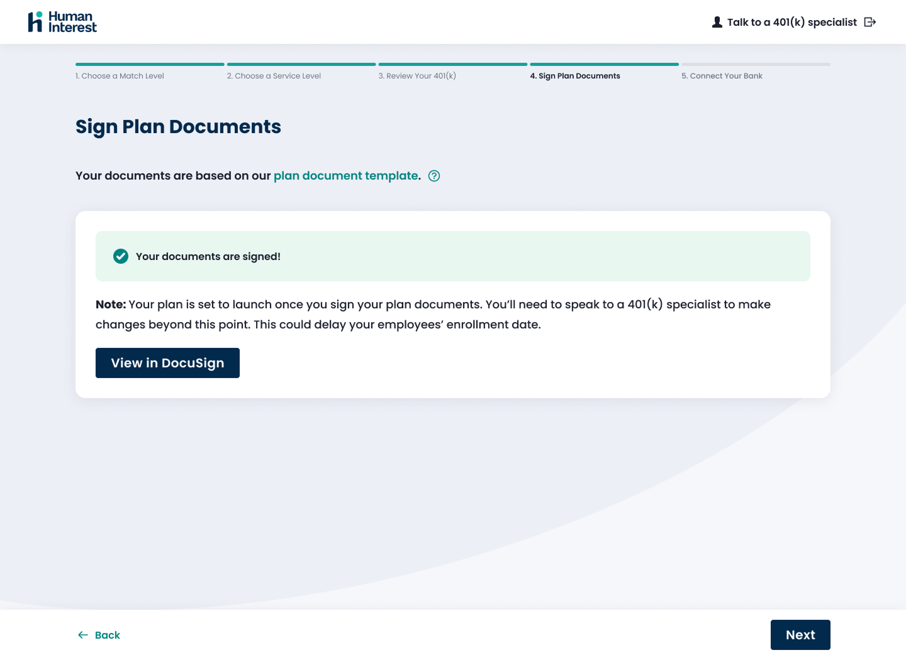

Acuity offers class scheduling in addition to 1:1 appointments, but it was built haphazardly, and customers who run classes could feel it. I spearheaded the launch of the new classes product and tapped into a new market of users.
Following the departure of a PM in the beginning of the year, I stepped up to pitch the concept of redeveloping our classes product to broaden our customer base beyond appointments. This was during widespread uncertainty as AI-fluency was mandated across the org, but I leveraged new tools and processes to share a vision that was was bought in by Leadership and delivered in 2026.
Interim PM
xx% in new class-based users

The current class offering was not built to help customers scale sessions, and forced them to create classes through a form and without visualizing the rest of their calendar.
Acuity was originally built for 1:1 appointments, with classes added later as an afterthought. As a result, fitness studios, yoga instructors, and educators were left with an experience that was cobbled together and not designed around their workflows. Creating classes lacked calendar context, and editing recurring classes required updating each session individually.

Once a class gets created, managing sessions and attendees was cumbersome, with no centralized workflow to view all sessions or track attendees.
At the time, traditional processes were being challenged by AI. I used the opportunity to build an elaborate prototype with Claude Code, showing where we can go with classes. This vision was presented to Leadership and greenlit to become our focus for the year.
The vision prototype was worked on for a week and informed by real insights of current customers and customer lookalikes. Using AI tools accelerated the discovery process, exposed real edge cases, and made it easier for me to share the narrative of the ideal state and the path needed to get there.
This was going to be a massive multi-quarter effort, so I had to show that we could deliver incremental value by breaking this down into smaller milestones.
With support from my ETM, I proposed the following sequence and 3 tracks of work that mirror the lifecycle of how class-based businesses use our product:
Class creation experience.
Class management experience.
Improved client booking experience.
Because I had kickstarted the project with a fully interactive prototype built by AI, the concepting step was all about refinement, detailed mobile designs, and careful planning of delivery phases.
I hosted my Claude-built prototype on Vercel to be the source of truth. However, stakeholders found it difficult to give feedback and see various states without having to go through the flows. I ended up building an annotation system within the prototype to allow stakeholders to leave comments.
Bsome asohago hgoiwgho iahgoi howghhgowg
some text to accompany this image!!!!!


Our new direction focused on asking admins to decide on only a few things while deferring nonessential tasks to a later time. You could customize almost everything in a 401(k) plan, but according to our research insights, most companies tend to lean toward a few popular configurations. We led with these common plan defaults.
I introduced a model that gave users the distinction they were already making in their heads: Series vs. Standalone Classes.
A Series Class — a multi-session class scheduled as a set. Ex. a 6-week pilates course.
A Standalone Class — a one-time or recurring session that clients can join without committing to all. Ex. a weekly Yoga class.

From the Calendar page, users would be able to create classes and sessions, giving them a holistic view of their schedule.
hlo
The concepts were a radical shift in how 401(k) setup has traditionally been treated. We tested these ideas with six admin recruits to see if they can complete onboarding.
Were terms and concepts easy to understand?
Where might admins get stuck in the flow?
Would admins feel ready to sign their plan docs?

While users thought that the flow was simple, there were a few threats to our start-to-complete rate.
Safe Harbor was a mystery. Is it a company? Is it a feature?
Users wanted to see the different pricing plans.

Designs were reworked to stop headlining with Safe Harbor and in response, people were much more forgiving when it was subtly introduced in body text. We also opted for a side by side comparison of the plans, which resonated well with users. Users said it felt like they had more visibility and control.
When it came to applying HUI, our design system, we realized it didn't cover the use cases of admin workflows.
The design system at the time catered more to the participant experience which boasted large elements and simpler elements. I audited the design system to see what I could get for free, but ended up creating several new components. We'd be able to feed two birds with one scone, because these new components would eventually be used when building out our internal tools.



In the first week of Fast Track's public release, we saw an increase of 900% signups.
Fast Track was first released in beta to customers connected to our partner payroll provider and then to everyone else in September 2023. Human Interest kept its partner status and hit a recordbreaking amount of signups, validating that there is a market of savvy but busy admins who prefer a no-touch setup. Fast Track was so successful that in the coming years, Human Interest started building a whole team to support and evolve this new business line. Read more about the product release here.